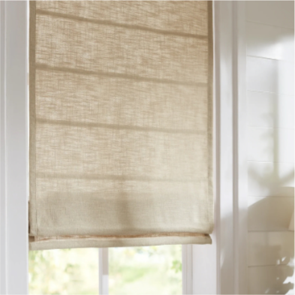
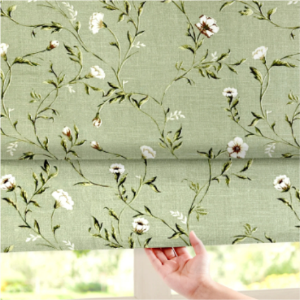
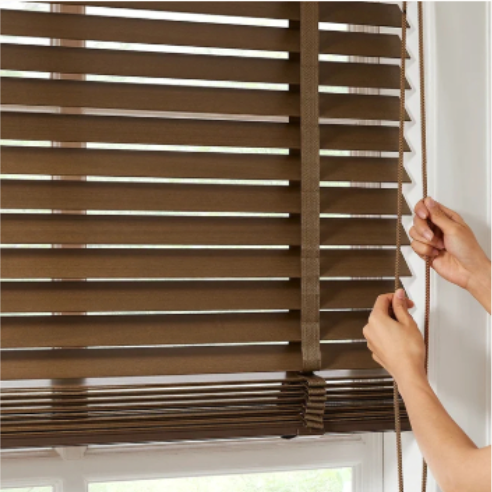
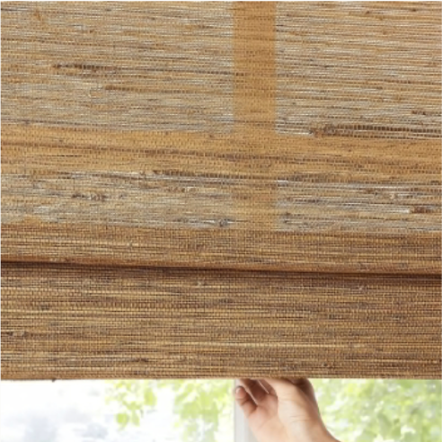

Upgrade Your Home in Style
Refresh Your Home With Our Latest Curtain Designs-Crafted To Bring A Clean, Modern Look And Effortless Comfort For The Year Ahead.

Linen Roman Shades

Floral Roman Shades

Venetian Blinds

Bamboo Shades